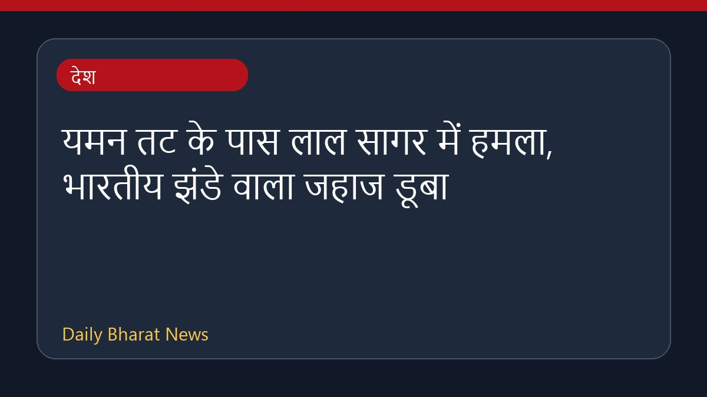

यमन तट के पास लाल सागर में हमला, भारतीय झंडे वाला जहाज डूबा

यमन के तट के पास लाल सागर में एक भारतीय झंडे वाले पोत पर हमला हुआ, जिसके बाद वह डूब गया। इस पोत पर सवार सभी नाविकों को सुरक्षित बचा लिया गया है। विभिन्न समाचार स्रोतों के अनुसार, चालक दल के 13 या 14 सदस्यों को बचाए जाने की जानकारी सामने आई है। इस घटना के बाद क्षेत्र में सुरक्षा और समुद्री नौवहन को लेकर चिंताएं बढ़ गई हैं। इस संबंध में अभी विस्तृत जानकारी सीमित है।
मूल स्रोत: India News Sources
Projectile sinks Indian-flagged ship off Yemen coast - BBC ↗
Projectile sinks Indian-flagged ship off Yemen coast - BBC ↗